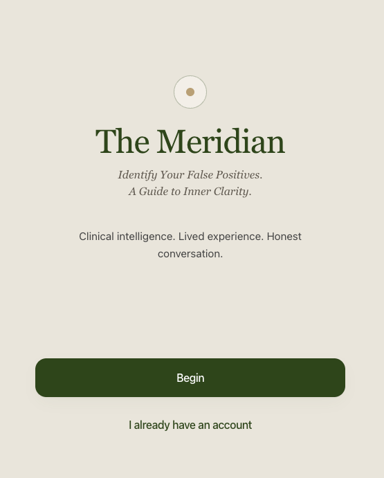
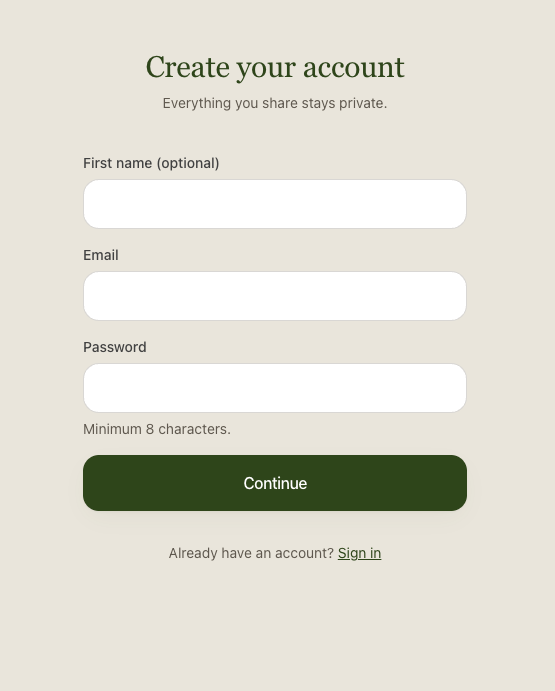
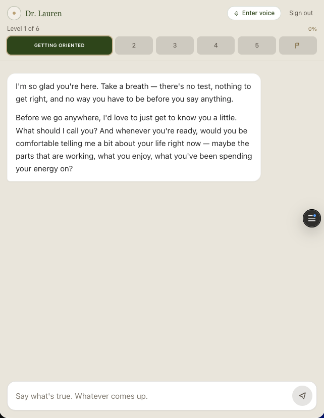

An AI agent that meets successful-but-empty professionals where they are, runs a clinically-informed discovery conversation, and helps them name the patterns driving their discontent — safely.
Millions of high-functioning professionals look successful by every external metric and feel empty underneath — but they haven't decided they need therapy or religion, so they fall through the cracks between both. The Meridian is a deployed AI agent ("Dr. Lauren") that holds a warm, clinically-informed conversation, surfaces which of four identity-level "false positives" a person is running on, and gently points toward a durable foundation — with deterministic safety guardrails that route anyone in crisis to human help. Validated with four synthetic personas and six human testers: 4/4 patterns classified correctly, 0 false negatives on crisis signals.
Context note: built as the capstone project for INTC 6033 (Researching AI Strategies), an MBA course. The project doubled as a real venture and the academic deliverable.
This started personally. My wife is a licensed clinical psychologist; I work in payments and build with AI. Over and over we saw the same person from two different professional angles: the high earner who has "made it" and is quietly running on empty. The clinical world calls them one thing; the faith world calls them another. Neither world reaches them early, because reaching out means first accepting a label — "patient" or "believer" — that they haven't accepted yet.
The market around this person is crowded but missed: faith-aligned therapy marketplaces (still therapy), meditation and devotional apps (no clinical depth), AI therapy chatbots (no spiritual dimension), and faith chatbots (no clinical framework). Six layers of competitors, and a clean gap down the middle: nobody was building an AI that meets you where you are, runs a genuinely clinical discovery process, and only then — with consent — points at a deeper foundation.
High-functioning professionals who are successful on paper but empty underneath have no low-stakes front door to clarity. Therapy asks them to self-identify as needing help; religion asks them to self-identify as believers. Most won't do either yet — so they self-medicate with the next win, the next drink, the next status marker, and the underlying pattern never gets named.
The project advanced through a deliberate research sequence — each milestone made the next decision sharper:
The product is the AI. "Dr. Lauren" is a Claude-powered agent whose system prompt encodes the full clinical framework: a Stage-0 rapport pass, a four-layer "lead domino" sequence that gently moves from safe surface topics toward identity-level beliefs, a confidence-tracked classification of the four false positives, and a consent-gated moment where a spiritual foundation can enter — never as doctrine up front. Around that brain sit voice input/output, authentication, and persistence.
The architecture follows a clean agent loop: sensors (user input) → policy layer (the clinical framework) → tools (the relational mirror, scripture, classification) → quality gates (safety screening, confidence thresholds) → learning signals (engagement, progression).



The solution-thinking changed more than the solution. Three pivots mattered most:
| Decision | Options weighed | Call & rationale |
|---|---|---|
| Agent brain | Claude vs. a real-time voice model as the reasoner | Claude owns reasoning. Conversation quality and a stable system prompt mattered more than latency. |
| Voice provider | OpenAI TTS vs. Cartesia vs. ElevenLabs | Cartesia for natural voice and a clean path to cloning; isolated behind one endpoint so it's swappable. |
| Memory model | Full transcript every turn vs. merged structured state | Merged state. Cheaper context and a reliable record of what the agent had learned. |
I validated the prototype on three fronts before widening access:
Risks I identified and addressed:
| Risk | Mitigation |
|---|---|
| False negative on a crisis signal (the critical failure mode) | Deterministic, sticky-and-escalating safety state; the moment a signal fires, the session cannot route to a "result" and surfaces human crisis resources. Bar: 0% false negatives. |
| Category confusion / "bait-and-switch" | Honest about the category up front, consent-led on the spiritual reveal; clinical rigor preserved so it never collapses into "another faith app." |
| Scope-of-practice / liability | Positioned as guided reflection and literacy, not therapy; clinical handoff is a first-class end state, not an afterthought. |
| Automation bias (trusting the model's reveal blindly) | Human-in-the-loop SME review of content; a deterministic server-side reveal gate independent of the model's own claim. |
As a pre-launch prototype, impact is framed as the KPIs I'd own at scale, tied directly to the friction point:
Supporting metrics I instrumented for: turns-to-reveal, time-to-reveal, drop-off stage, % reaching the pattern reveal, % of returning users, and a qualitative "this resonates" rate from exit reflections.